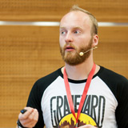
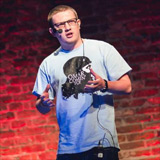

Meet the open web on
Back in 2011, we organized the first Meet.js event in Poznań, Poland. Currently similar meetings are organized in eight cities in Poland. It's about time to summarize topics we've talked about this year. Meet.js Summit is the hottest conference this autumn and it's completely free! Join us to share the awesomeness of the Open Web!
SWPS, Kutrzeby 10, Poznań, Poland
Poznań
Agenda
- 0900
- Registration starts!
- 1800
- Wrap up
- 2000
- After party!
Speakers
-
Łukasz Wójciak
Talk
Mobile HTML5 Game Development: design for performance.

JS developer for 8 years - currently CTO @UsabilityTools and owner of The Little Hog.
Focused mainly on mobile development with angular/ionic and html5 game development. -
Andrzej Mazur
Talk
Playing around with the Gamepad API
HTML5 Game Developer, founder of Enclave Games. Front-end developer and JavaScript programmer. Passionate about everything around HTML5 games: Gamedev.js Weekly newsletter publisher, js13kGames competition creator and Gamedev.js Meetups organizer. Blogger, writer, HTML5 evangelist and Firefox OS fan.
-
Kamil Ogórek
Talk
Ampersand.js – Minimalistic approach to not so minimalistic problems

Senior Client-side Engineer at X-Team, JavaScript passionate. Climber, athlete, drummer and music lover. I admire great food and love to cook. Core contributor for AmpersandJS.
-
Artur Skowroński
Talk
Let It Flow - Introduction to Functional Reactive Programming

Java/JavaScript Developer working in Schibsted Tech Polska, with the soul split between flexibility of dynamic languages and sublime strictness of statically-typed ones. Wannabe polyglot programmer, trying to implement each new learned concept in every known language, with different results.
-

Ilya Pukhalski
Talk
The Story Behind Touch Delay, or How Small Things Can Be A Huge Pain In The Browser
Web-developer, web-designer, JavaScript-lover, speaker. Currently specializes on cross-platform, mobile and front-end development.
-
Michał Janiszewski
Talk
Douchebag Programmers - Our Image?
Front-end (and occasionally Python) developer at STX Next. Especially interested at JS applications architecture and performance.
-
Johannes Ippen
Talk
Breaking the Web
Johannes Ippen is a designer & author from Berlin. He's responsible for the graphics department at mobile games developer Wooga. In his spare time, Johannes does fun projects and design studies at thxalot.co
-
Kamil Koterba
Talk
Effective SVG icons management system
Persistent optimist, software engineer with heart divided between design and coding. Since 2 years employee at Wikia in Community Engineering team. Recently happened to be main developer of kariera.wikia.com.
-
Marcin Warpechowski
Talk
Get Practical with Web Components
Marcin Warpechowski is a developer at Starcounter. He builds web applications with emerging Open Web Platform technologies, including Web Components, and is the creator of an open source data grid editor, Handsontable. He lives in Gdynia, Poland.
-
Szymon Nowak
Talk
WebRTC - so much more than just video conferencing

Szymon is a web developer from Katowice, Poland. He co-organizes and frequently gives talks at meet.js meetups in his hometown. He likes to experiment with cutting-edge web technologies. Author of ShareDrop (https://www.sharedrop.io) - WebRTC powered peer-to-peer file transfer app.
-
Jacek Tomaszewski
Talk
Gulp, as a better Grunt? Automate your frontend development workflow fully!

Fullstack webdeveloper. Working as a freelancer, currently specialized in Rails, Angular & Ionic. Coding since a child.
-
Jan Dudek
Talk
Let’s talk about front-end performance

Web developer since 2005. After years of experience as a full-stack developer he's now responsible for educating new people at Pilot and helping them to become successful web developers.
-
Staś Małolepszy
Talk
Clientside localization in Firefox OS
Mozilla's "localizabilizer," Staś works with hundreds of volunteers around the globe on making Firefox available in almost 100 languages. His current focus is the localization technology in Firefox OS, the new mobile OS from Mozilla, and L20n, a paradigm-shifting localization platform for developers and a programming language for localizers.
-

Michał Budzyński
Talk
Extreme pixel manipulation
O, Hai, I'm Michał. I mostly just travel & watch TV Shows.
-
Adam Pohorecki
Talk
Boilerplate-B-Gone - do it yourself syntactic sugar with sweet.js

Aspiring software craftsman and TDD enthusiast. Founder of SCKRK. Early adopter of AngularJS (some say, way too early). Big fan of the Clojure programming language. Senior Web Developer at GunpowderLabs.
-
Maciej Winnicki
Talk
Working with single-threaded event loop

Software engineer with experience in both backend and frontend technologies. Senior UI developer at Egnyte. Former Solution Architect at Allegro Group. Currently mainly interested in functional reactive programming and distributed systems.
-
Krzysztof Jankowski
Talk
Be inspired - my story of becoming an indie game developer

"I'm a indie game developer, pixel artist and a street photographer. And for living I'm a front-end developer at Pearson IOKI.
I do games in JavaScript for more than 2 years."
Become our sponsor
Meet.js is a meetup on HTML5, JavaScript and CSS3 that takes place in eight cities in Poland regularly. Each meeting gathers tens of front-end developers, which makes it one of the biggest technical communities in the country. We are organizing Meet.js Summit to sum up what we discovered and discussed this year and to meet developers from all the cities where Meet.js is present. Since we are devoted to the idea of an open and inclusive web, our conference is free of charge. We aim to promote good practices and to reach people interested in improving their skills required to become great web developers. Meet.js Summit is probably one of the biggest Polish conferences for web developers. Each year we host over 300 front-end specialists.
As the event aims to grow each year, it can't happen without your help. Join the amazing companies that care about JavaScript and front-end community. Meet.js Summit is a great opportunity to promote your brand and recruit new developers from over 300 attendees.
Download our Sponsorship Packages (PDF) to find out more and contact us directly to discuss sponsorship opportunities.
There's a Polish version of the offer: Oferta sponsorska (PDF)
What is Meet.js?
Meet.js is a free front-end meetup organized by web enthusiasts in 8 major Polish cities - Warsaw, Gdańsk, Poznań, Wrocław, Cracow and Katowice, Łódź, Szczecin. The idea was formed by Damian Wielgosik (Front-Trends, Falsy Values) in January, 2011. We believe it is very important to engage local communities in sharing the Open Web knowledge focusing mostly on JavaScript and HTML5. Open Web knowledge makes people develop fast and improve their skills.
Want to support people who share front-end passion? Let's talk! Contact us at contact@meetjs.pl.
 Zbyszek Tenerowicz
@naugtur
Zbyszek Tenerowicz
@naugtur
 Joanna Zakrzewska
Joanna Zakrzewska
 Kamil Pawluczuk
Kamil Pawluczuk